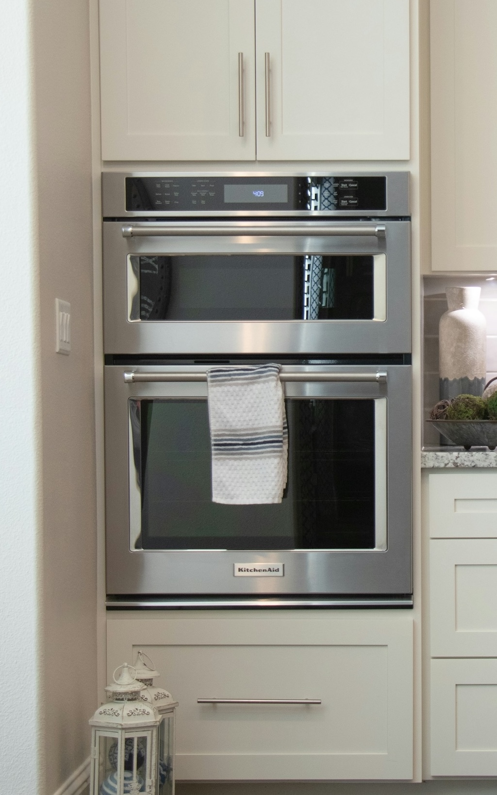

A refrigerator that stops cooling is a heat problem with four possible owners: the air inside the cabinet, the defrost cycle, the sensors that report temperature, or the sealed system that makes the cold. The diagnostic works down that list because the cheap parts come first.
Start with the model and serial plate
Every part in a sealed-system repair is matched to the model and serial, not to the year on the receipt. On a built-in cabinet the plate is usually behind the grille or inside the fresh-food compartment; on a freestanding unit it sits on the inner wall. The plate decides which defrost heater, thermistor and fan motor fit, so the part ordered is the part that belongs in the cabinet — not the closest one on the van.

The five checks, in order
The diagnostic is a sequence, not a hunch. Each step either explains the symptom or rules out a whole group of parts, and the order is set by what the test costs to run.
- Airflow. The evaporator fan and the return path behind the drawers. A fan that hums without turning, or a blocked return, gives a cold freezer and a warm refrigerator.
- Door seal and gasket. A folded gasket at the hinge corner pulls in room air and ices the coil. Checked by hand and with a paper strip along the frame.
- Defrost cycle. Frost across the whole back wall means the heater, the timer or the terminator has stopped the melt. A coil packed with ice blocks airflow even when the fan runs.
- Thermistors and sensors. Resistance read at room temperature and compared with the model chart. A sensor reading four degrees out can keep the compressor from starting at all.
- Sealed-system pressures. Only after the four checks above come back clean. Low suction pressure or a compressor that will not start under load is where a repair becomes a quoted sealed-system job.
What each fault usually costs
The ranges below are approximate estimates, published so you know the ballpark before you call. They cover parts and labor, and the $89 diagnostic is credited toward the repair once you approve it.
| Symptom | What usually fails | Typical repair |
|---|---|---|
| Won't cool, fans running | Defrost heater or thermistor | ~$240 – 310 |
| Freezer fine, refrigerator warm | Air damper or evaporator fan | ~$265 – 330 |
| Frost across the back wall | Defrost timer or heater | ~$240 – 310 |
| Ice maker stopped | Water inlet valve or filter | ~$210 – 290 |
| Water on the floor | Blocked drain line or defrost trough | ~$195 – 275 |
| Running all the time | Dust-blocked condenser coil | ~$149 – 189 |
Prices marked with a tilde are estimates: the exact price is confirmed after the on-site diagnostic, before any work starts. If a factory part has to be ordered, you get the part number, the price and the ETA before we leave the driveway.
When the sealed system is the problem
A sealed-system repair is the one place where the quote can climb past the price of the appliance itself. It is also the repair most often diagnosed from the door, which is why we pressure-test before quoting it:
- Start components. Relay and capacitor tested at start-up; a compressor that cannot pull in is not the same as a compressor that has failed.
- A leaking evaporator. Pressure-tested, then quoted as sealed-system work with the leak point named on the invoice.
- A restricted capillary tube. The cabinet cools unevenly and the suction line runs cold — a restriction, not a charge problem.
If the sealed-system figure passes the price of a comparable unit, we say so on the same visit and put both numbers in writing. The refrigerator repair page lists what the visit covers.
"We open with airflow because it is free to test and it explains half the calls. The compressor gets blamed for a fan motor, a folded door gasket and a coil packed with ice — in that order."
Adrian M., refrigeration technician · 11 years on the van
What you can check before we arrive
None of these need tools, and any of them can save you the visit entirely:
- Set the control one step colder for two hours. If the cabinet recovers, the fault is in the control or the defrost cycle, not the charge.
- Feel the back wall. Even frost is normal; a solid block of ice across the panel is a defrost failure.
- Listen at the back of the freezer for the evaporator fan. Silence or a scraping sound shortens the diagnosis.
- Close the door on a sheet of paper and pull it out along the frame. It should drag at every point.
Leave the unit plugged in and empty what you can into a cooler. A refrigerator that has been off for a day tells us much less than one that is still running when we arrive.
Book the $89 diagnostic
One visit, a written price before any part is ordered, and the fee credited toward the repair. Call (619) 555-0142 or book a two-hour arrival window.
Keep reading
- What the $89 diagnostic actually covers — 5 min read
- Cleaning condenser coils: the 20-minute job that pays for itself — 4 min read
- When the repair costs more than the appliance — 7 min read
Written by the Fix Spark technician desk from call records in San Diego County. Ranges last reviewed November 2026 — who we are.